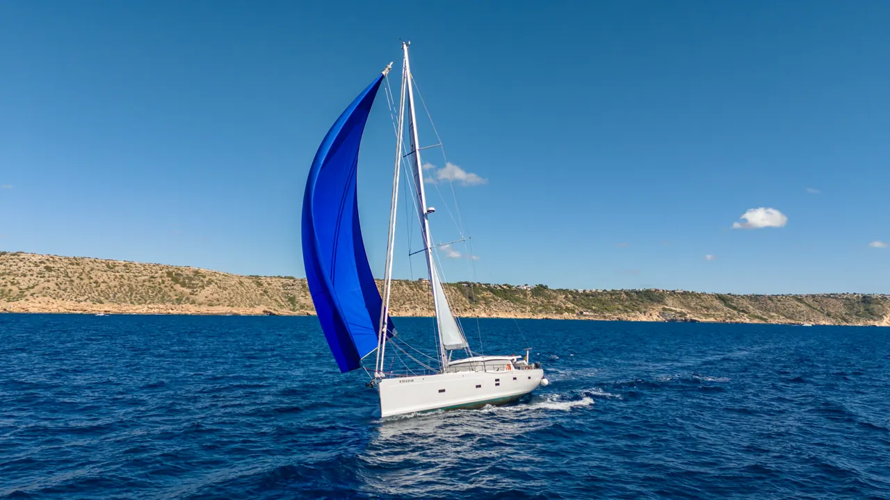
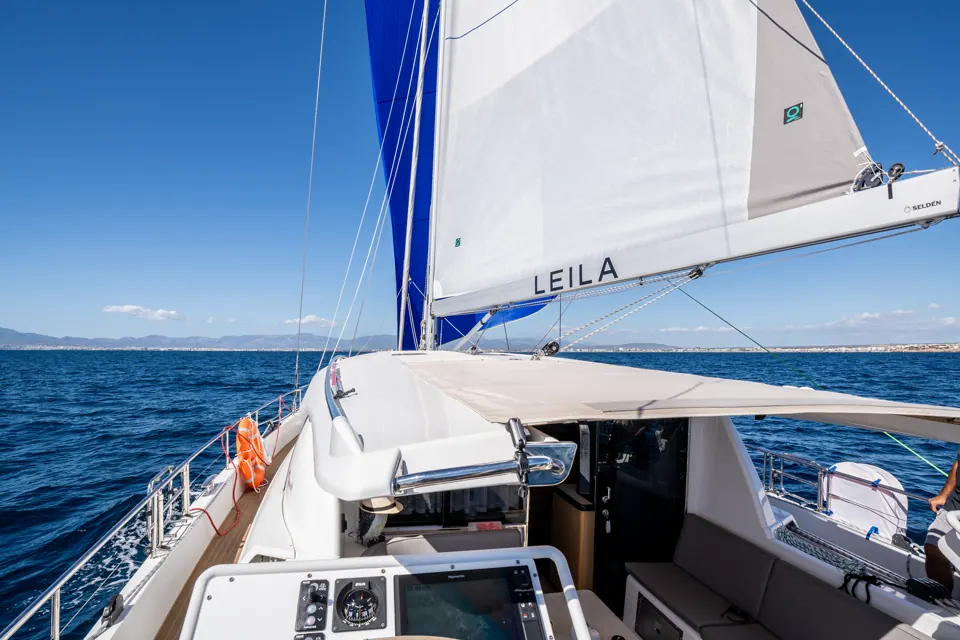
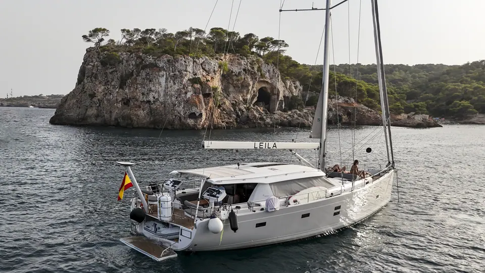
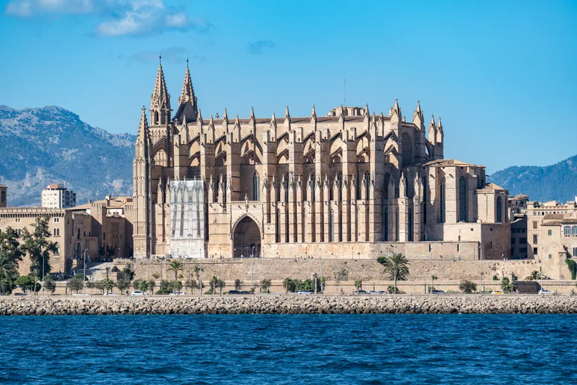
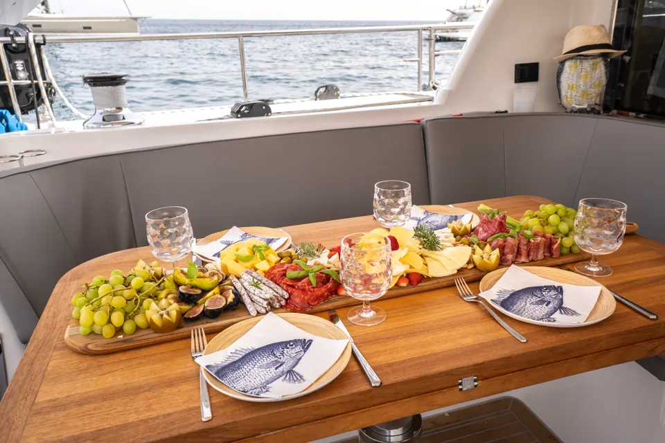
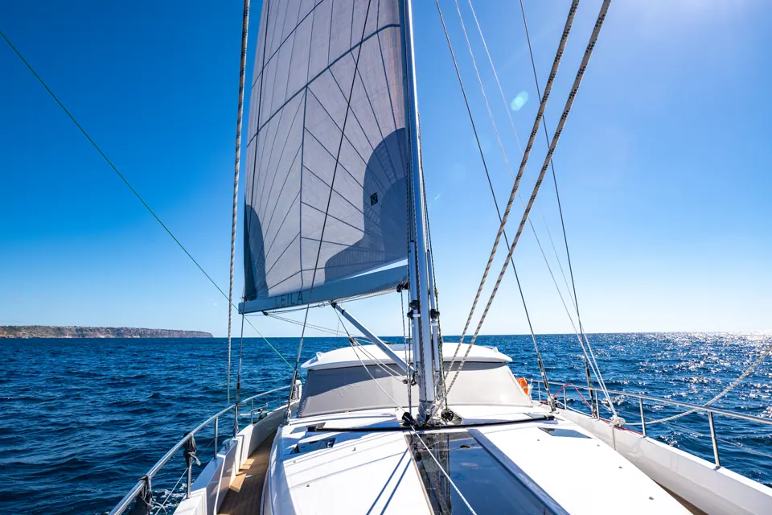
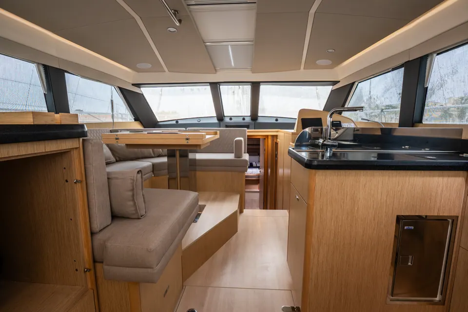
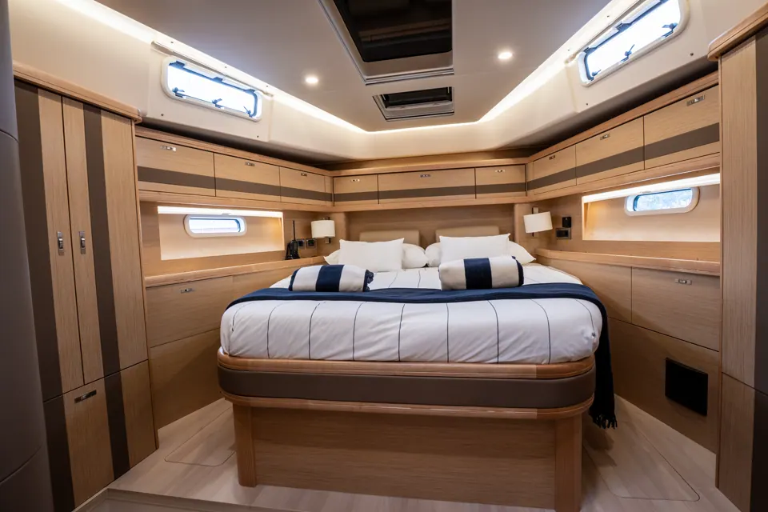
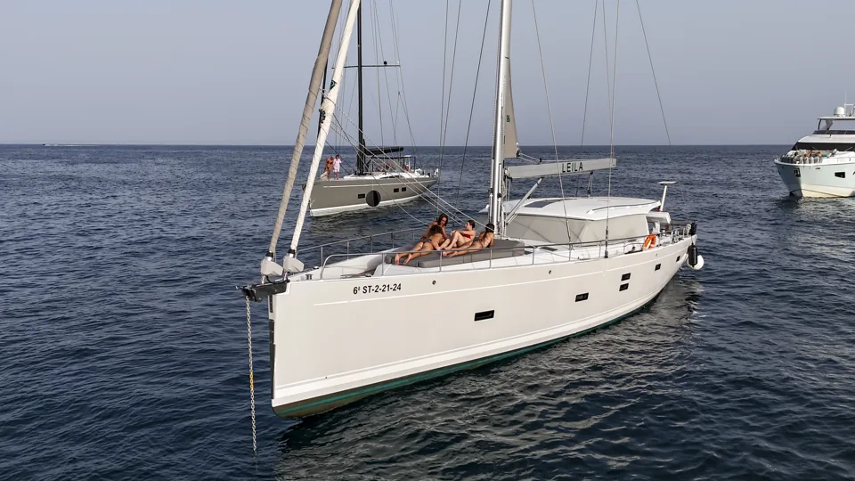
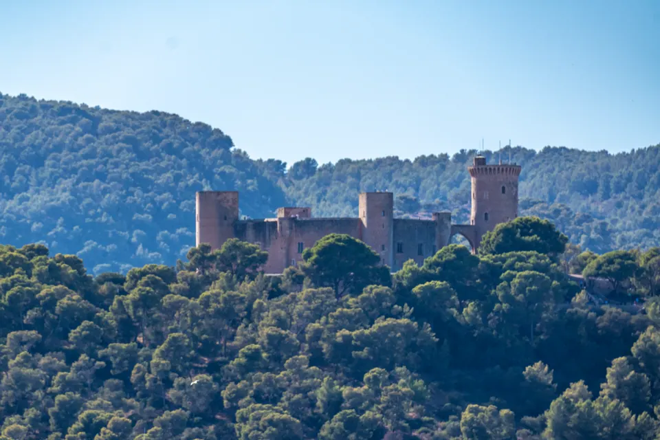

Tagescharter
Ein Tag auf dem Wasser mit Zeit zum Segeln, Schwimmen und Genießen der Küste.

Lass den Wind den Rhythmus bestimmen. Ein privates Segelerlebnis, abgestimmt auf den Tag, das Meer und die Menschen an Bord.
Verfügbarkeit anfragenVom Wasser aus zeigt Mallorca eine ganz neue Seite.
An Bord der LEILA gehört der Tag dem Segeln, entspannten Mahlzeiten und eurem eigenen Rhythmus. Von Palma aus entsteht der Plan passend zu den Bedingungen und euren Wünschen.
Entdecke unsere Törns ↗
Segeln hat eine stille Schönheit: Das Boot nimmt Kurs auf, die Küste zieht gemächlich vorbei und es bleibt Zeit für die kleinen Dinge.
Genieße Wind und Meer, wann immer Wetter und Bedingungen es erlauben.
Zeit zum Schwimmen, für ein langes Mittagessen oder eine ruhige Pause.
Route und Zeitplan richten sich nach eurer Gruppe und den Bedingungen.
Persönlicher Service für ein entspanntes und stimmiges Erlebnis.

LEILA ist eine Moody 54 DS, Baujahr 2024: eine Segelyacht mit großzügigen Außen- und Innenbereichen für gemeinsame Zeit und ruhige Momente.
Die zulässige Gästezahl wird vor jeder Buchungsbestätigung anhand der aktuellen Zulassung des Bootes geprüft.
Jeder Charter wird individuell besprochen. Termine, Route, Leistungen und mögliche Zusatzkosten stimmen wir vor der Buchung mit euch ab.
Ein Tag auf dem Wasser mit Zeit zum Segeln, Schwimmen und Genießen der Küste.
Fahre hinaus, wenn das Licht weicher wird. Route und Zeitplan hängen von den Bedingungen ab.
Verbringe mehr Zeit an Bord und plane die Route gemeinsam mit der Crew, Tag für Tag.
Ein längerer Segelurlaub, abgestimmt auf eure Termine und die Bedingungen.
Erzähle uns von deiner Idee und wir finden einen passenden Plan für eure Zeit an Bord.
Erzähle uns, was ihr feiern möchtet, und wir besprechen die Möglichkeiten.
Von Palma aus eröffnen die Balearen eine Welt aus Buchten, Häfen und wechselnden Horizonten. Mallorca, Cabrera und weitere Ziele kommen je nach Charterdauer, Wetter, Tiefgang und Segelbedingungen infrage.
Jede Route wird gemeinsam geplant und passend zu den Bedingungen bestätigt.


Wenn im Angebot enthalten, servieren wir an Bord Frühstück und eine Mahlzeit. Bei vorheriger Mitteilung können Menüs an Vorlieben und Unverträglichkeiten angepasst werden.
Getränke, Proviant, APA und weitere Extras richten sich nach dem vereinbarten Charter. Das bestätigte Angebot führt alle enthaltenen und zusätzlich berechneten Leistungen auf.





Vom ersten Bad in einer stillen Bucht bis zum Abendessen im Cockpit: Die schönsten Momente eines Segeltages sind oft die einfachen. Jede Gruppe bringt ihren eigenen Rhythmus mit. LEILA ist ein Ort, um zur Ruhe zu kommen, den Ausblick zu teilen und den Tag nach den eigenen Wünschen zu gestalten.
LEILA ist eine Moody 54 DS aus dem Jahr 2024 mit Heimathafen Palma. Ihre Geschichte entsteht weiter auf dem Wasser: auf jedem Segelabschnitt, im wechselnden Licht der Balearen und mit den Menschen, die an Bord kommen. Jede Reise beginnt mit derselben Idee: Das Meer gibt den Rhythmus vor.
Wähle deinen Wunschtermin und erzähle uns von deinen Plänen. Eine Anfrage ist noch keine Buchung. LEILA stimmt Verfügbarkeit, Route, Leistungen und Bedingungen mit dir ab.
Termine sind zunächst unverbindlich. Der Kapitän bestätigt die Verfügbarkeit vor der Zahlung.
Erzähle uns von deinem Wunsch. Der Kapitän der LEILA prüft deine Anfrage und meldet sich zur Verfügbarkeit und zu den nächsten Schritten.
LEILA liegt in der Marina La Lonja in Palma de Mallorca. Die Geschäftskontakte ergänzen wir, sobald E-Mail-, WhatsApp- und Social-Media-Daten vorliegen. Bis dahin kannst du das Anfrageformular nutzen.